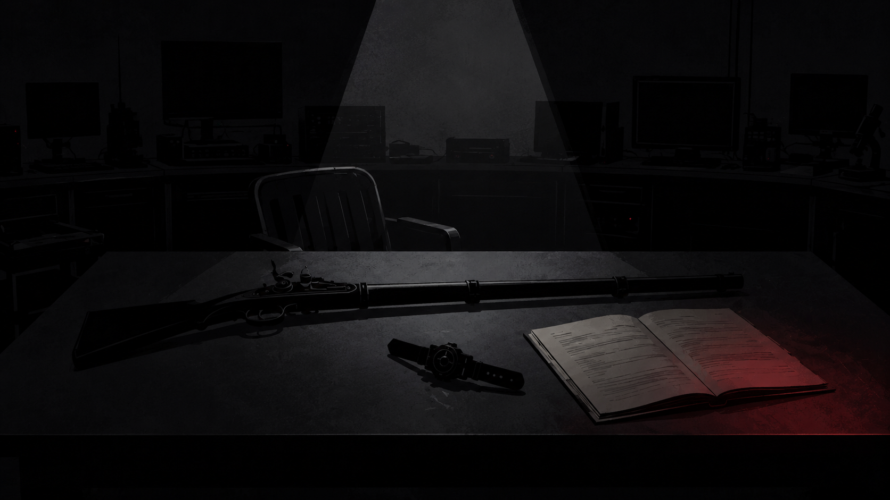

Ending C-1
Ending C-1
박사가 옐로의 진술을 읽으려는 순간, 블랙이 자리에서 일어났다. 머스킷을 테이블에 눕히고 손목의 변신 장치를 풀어 그 옆에 놓았다.
“옐로가 아니다. 레드를 죽인 건 나다.”
블루가 말없이 옐로 곁으로 자리를 옮겼다. 옐로는 두 손을 맞잡은 채 블랙을 바라봤다.
블랙은 국가 요원으로 일하던 때의 일을 말했다. 동료를 의심하면서도 행동하지 못했고, 망설이는 사이 많은 사람이 죽었다. 그 뒤로는 의심이 들면 먼저 막아야 한다고 믿었다. 카오스로 향하는 레드를 보았을 때도 이유를 묻지 않았다.
“레드는 아이의 부모를 구하려고 했다. 나는 이유를 묻지도 않고 레드를 배신자로 정했다.”
박사는 머스킷과 변신 장치를 거두었다.

핑크는 옐로 앞에 놓인 진술서를 덮었다.
블랙이 옐로를 향해 고개를 숙이자 옐로는 맞잡은 손에 힘을 주었다. 블루는 그 곁을 떠나지 않았다.
박사는 블랙이 한 말을 기록했다. 블루와 옐로, 핑크는 옆방으로 자리를 옮겼다.